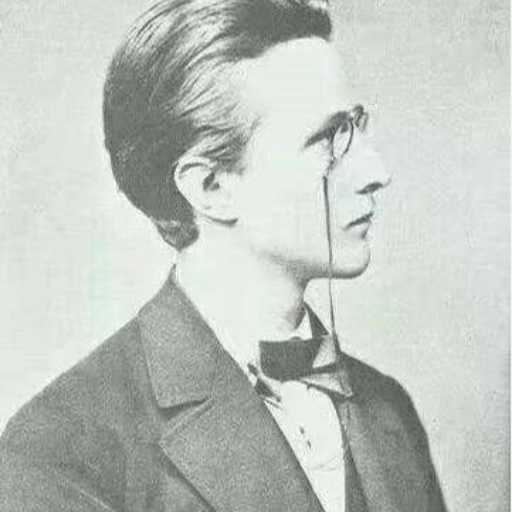

名字:
HARRY习
性别:男

介绍:著有司把你全家发向烟瘴地面去，或充军，或充吏，或做首领官！
问题
答案
新建于:2016-11-01 11:26:19 AM，更新于2017-07-18 01:24:51 PM
Pre上一页
Next下一页
跳页:
正文: 〈一〉
梁实秋撰文批评谢冰心的《繁星》《春水》
不久后，梁实秋在赴美国的轮船上与冰心不期而遇。
梁实秋问冰心：“您赴美国修习什么？”
冰心答：“文学。 ”
“您呢？”
梁实秋：“文学批评。”
〈二〉
1972年，大陆音信不通。在台湾的梁实秋误以为冰心已死，在报上撰文悼念冰心，当然了冰心还没死，而且她也看到了。这就尴尬了……
后来梁实秋在给朋友的一封信中写到：现在我知道冰心未死，我很高兴，冰心既然看到了我写的悼念她的文章，她当然知道我也未死。这年头儿，彼此都知道都还活着，实在不易。
〈三〉
相同的原因，梁实秋写过《忆沈从文》。幸好，这一次有了前车之鉴，他没有马上发表，而是在等确切消息。果然沈从文未死，知道确切消息后，梁实秋才在七三年把这篇文章当做一件奇事发表。
〈四〉
这是一个悲伤的故事，一家女生杂志向我约稿，我好死不死地「开黄腔」写了这个，自然就白写了……还是图样
八位酒仙与一瓶保肾丸
这是一个悲伤的故事，一个文学系讲师同时得罪了文学院院长、财务主任、秘书长、前教育厅厅长还有校长，不得不卷铺盖走人。而故事里的那个倒霉蛋就是沈从文。
一九三零年，青岛大学创办不久，校长杨振声励精图治，大力招揽人才，顺便替友校宣传道：厦门大学不行，因为厦门太热，易患疟疾，要做研究还得来青岛大学。
总之，闻一多、梁实秋、沈从文等不少人才都在这段时间到了青岛大学。闻一多任文学院院长，梁实秋兼图书馆馆长，这哥俩都是清华毕业美国留学，而沈从文只有小学文凭，就只有老老实实地给闻一多打工了。
青岛风景很好，但没什么文化背景。然而一帮子文人凑在一起，不登名川胜山吟两句诗，不访历史古迹赋几篇词，无聊啊，一肚子的学问憋得慌。就只好发扬文人的另一项传统，喝酒了。
十二三个教授周末凑满一桌，日暮入席，直喝到月明星稀，喝光一坛三十斤的花雕。当然了，不是每个人都能稳坐到底，能撑到席末的一般就闻一多、梁实秋、杨振声等八人。
一次闻一多喝高兴了，想起了杜甫的《饮中八仙歌》，再看看桌上八人，一拍桌子喊道：我们是酒中八仙！八位大仙号称「酒压胶济一带，拳打南北二京」。
闻一多还说：名士不必需奇才，但使常得无事，痛饮酒，熟读离骚，便可称名士。狂倒是够狂，但闻一多酒量却不行。梁实秋还把闻一多酒量不行这件事写到文章里去了，顺便揭闻一多的短「闻一日薄醉，冷风一吹，昏倒在尿池旁」。
好巧，沈从文此时发表了小说《八骏图》，小说描写了青岛某大学里八位满口禁欲主义，实则心理扭曲的闷骚教授，还借主人公之口说所有人都有病。然而青岛只有青岛大学一所大学，这就很尴尬了。
小说里特别描写了教授甲的房间： 「 一部《凝雨集》，一部《五百家香艳诗》。大白麻布蚊帐里挂一幅半裸体的香烟广告美女画，窗台上放了一个红色保肾丸小瓶子，一个鱼肝油瓶子，一帖头疼膏。」 啧啧，小黄书、肾宝都齐活了。
有些想搞事情的人说教授甲就是闻一多，这些人心眼忒坏，特别关照「保肾丸」暗指闻一多肾虚。还说《八骏图》里的八个闷骚教授是讽刺酒中八仙。 鲁迅先生教导我们：「其实地上本没有路，走的人多了，也便成了路」，传言本是无所谓真无所谓假的，传的人多了也就成真的了。
以闻先生经常怒怼政府的暴脾气，再加上他还是沈从文的顶头上司，简直让人有些心疼沈从文了。 更令人悲伤的是，八位酒仙的职位一个比一个高，有文学院院长、财务主任、秘书长、前教育厅厅长还有校长，沈从文凭一己之力几乎把学校里的领导得罪光了。
好心疼沈从文。 沈从文后来自己也说：「偶然写成的《八骏图》损害了他人的尊严,使我无从和甲乙丙丁专家同在一处共事 」。只是不知道沈从文去财务室结工资时，看到财务主任是怎样的一种尴尬。
从此闻一多就和沈从文绝交了，即使后来两人都任教于西南联大，整天抬头不见低头见，依然形同陌路。直到一九三八年闻一多领着战区师生跋涉到西南时，沈从文邀请闻一多和他的学生到自己家里做客，患难见真情，两人才复归于好。
〈五〉
梁实秋文章——
有一年中秋前后，徐志摩跑来找我（梁实秋），对我附耳说：“胡大哥请吃花酒，让我邀你去捧捧场，你能不能去？先去和尊夫人商量一下，要不准你去就算了。”
我上楼去告诉季淑，季淑（夫人）笑嘻嘻地一口答应：“你去嘛，见识见识，喂，什么时候回来？”“当然是吃完饭就回来。”胡先生平时应酬能免俗，也偶尔叫条子侑酒，照例到了节期要去请一桌酒席。
那位姑娘的名字是“抱月”，徐志摩说大概我们胡大哥喜欢那个月字是古月之月，否则想不出为什么相与了这位姑娘。我记得同席的还有唐腴胪和陆仲安，都是各中老手。
叫条子：招妓
侑：在筵席旁助兴，劝人吃喝
唐腴胪：哈佛大学经济学硕士，回国后，担任国民政府财政部长宋子文的机要秘书，深得宋子文的信任。
陆仲安：名医
〈六〉
这群酒鬼在青岛喝酒的时候，有一次闻一多还顾座上共八人，一时灵感，遂曰：“我们是酒中八仙！”
闻一多说：名士不必须奇才，但使常得无事，痛饮酒，熟读《离骚》，便可称名士。
说的不错，然而闻一多一日薄醉，冷风一吹，昏倒在尿池旁。
〈七〉
河蟹河蟹河蟹……
〈八〉
九一八事变后，全国学生游行示威要求抗日，青岛大学的学生可能觉得在青岛游行没什么用，跑到车站把火车给截了，一大波学生浩浩荡荡直接杀向南京。
校务会议上，闻一多主张挥泪斩马谡，开除为首学生。等到学生们游行完了回来发现贴上了开除公告，便拿出了看家本领—游行示威打标语。要驱逐校长驱逐教授，有个条幅上写着：“驱逐不学无术的闻一多！”梁实秋认为，“不学无术”四个字加在闻一多身上，真是不可思议。学生们还在黑板上画了一个乌龟一个兔子，旁边写着“闻一多与梁实秋”。闻一多很严肃地问梁实秋：“哪一个是我？”梁实秋回答：“任你选择。”
〈九〉
一天晚上十一点多，徐志摩来看梁实秋，发现长窗虚掩着，灯光外露，便想吓一吓梁实秋。徐志摩一把把门拉开，大叫一声，结果屋里单人沙发上，不认识的一男一女受惊跃起，吓得徐志摩拔腿就跑。梁实秋住的楼上。
徐志摩被吓得心里突突跳，走到附近一个单身朋友家，他从后门摸上楼，一看寝室里黑黝黝的，心想这家伙睡了，来吓他一下，顺手把门框上的电灯开关一拧，结果徐志摩失声大叫，原来床上不止一人在睡，这一惊非同小可，踉跄下楼，一口气跑回家，乖乖地自己去睡了。后来徐志摩悄悄把这件事告诉梁实秋说：“我以后再也不敢在黑夜闯进人家去了。”
〈十〉
徐志摩同陆小曼结婚，请他老师梁启超当证婚人。梁启超对这件事情很不爽，给徐志摩讲要我当证婚人也可以，但我要在证婚时痛责你一顿，徐志摩同意了。
结婚那天，梁启超超常发挥，声色俱厉，引经据典骂得徐志摩抬不起头。“徐志摩，你这个人性情浮躁，所以在学问方面没有成就，你这个人用情不专，以致离婚再娶……以后务要痛改前非，重新做人。”观礼的人也为之大窘。
徐志摩只好走到前面，向老师认错，可怜兮兮地说：“请老师不要再讲下去了，顾全弟子一点面子吧 。”
评论里有梁启超骂的全文了。
〈十一〉
这个喜欢沈从文的都知道吧。
沈从文经徐志摩介绍，在中国公学教书。当时的校长是胡适。也就胡适才有这么大胆量任命
一个小学毕业的人当大学教授。
学生听说新锐作家沈从文要上课，就都来听课。沈从文进教室一看，黑压压的挤满了人，腼腆的沈从文一下就懵了，站在讲台上十分钟讲不出话，只是呆呆地望着学生。
到底是作家，后来他急中生智，转身在黑板上写了一句话：“我第一次上课，见你们人多，怕了。”终于，沈从文平复了点紧张心情，开始讲课。但他还是太紧张了，本来准备了一节课的东西十多分钟就讲完了。
第一堂课当然是失败的。有人把这件事反映到校长胡适那儿。胡适的回答却十分有意思：“上课讲不出话来，学生不轰他，这就是成功。”
〈十二〉
《围城》里的汉堡大学
“就近汉堡大学的博士学位，算是最容易混得了，但也需要六个月”
汉堡大学建校与1919年，在小说背景里不过十来年历史，确实很短了。
《围城》里还写了一条鄙视链
“在大学里，理科学生瞧不起文科学生，外国语文系学生瞧不起中国文学系学生，中国文学系学生瞧不起哲学学生，哲学系学生瞧不起社会系学生，社会系学生瞧不起教育系学生，教育学生没有什么谁可以给他们瞧不起了，只能瞧不起本系的先生。”
〈十三〉
这事在梁实秋散文里
郁达夫去北平玩住在梁实秋家，郁先生有一个爱好——喜欢嫖娼，尤其是嫖土娼。先生人生地不熟，就问梁实秋北平的四等妓院在什么地方。梁实秋赶忙表示不知道，结果郁达夫由梁实秋二哥的车夫带着去了四等妓院，兴尽而返。
〈十四〉
评论里有人问沈从文和郁达夫、徐志摩的关系，略述如下。
文学青年沈从文初来北平，几个钱没几天就花光了。实在没办法，他发扬文学青年的特长——写信，给四五个作家写信求援。其中只有郁达夫有回复，郁达夫看信后就到沈从文租住的小黑屋（储煤房改造）里去看他，看沈从文如此落魄，当即脱下自己围巾，拍拍雪花为沈从文围上。随后请沈从文吃了一顿，还给了沈从文五块钱。
郁达夫一个东京帝国大学的高材生的月工资都只拿的到30多，加之郁抽烟喝酒，一个月只剩下十元左右，连棉裤都买不起，给沈从文五元实在是尽力了。
后来沈从文经郁达夫介绍，结识了徐志摩。徐志摩很欣赏沈从文，把他引荐给时任中国公学校长的胡适，沈从文才在中国公学谋的一教席，后来沈任教青岛大学也是由徐志摩引荐。
〈十五〉
在西南联大，日本飞机经常飞过，所以教授学生时不时就得跑警报。
有一次跑警报，学生们搀着刘文典往防空洞跑。刘文典跑着跑着，想起陈寅恪身子骨弱，视力不好，恐有生命危险。便率领几个学生折返去救陈寅恪。找到陈寅恪了往城外跑的路上，学生执意要搀扶刘文典，刘文典不让，情急之下大喊：保护国粹要紧，保护国粹要紧。
又有一次跑警报，刘文典在出城的人流里碰到沈从文，无名火起，骂道：“我跑是因为我死了就没人讲庄子了，学生跑是为了保存下一代的希望，可是该死的，你干嘛跑！”
〈十六〉
朱自清写过一篇《桨声灯影里的秦淮河》，盛赞秦淮河上的船“雅丽过于他处而有奇异的吸引力”。
梁实秋有一回游秦淮河，只见窄窄的河道，一汪发绿的死水，几条破旧的游艇。来都来了，他们勉强地冲着一艘游艇走去 ，只见船舱中走出一位衣履不整的老妪，带着一位浓妆艳抹俗不可耐的村姑出来迎客。吓得梁实秋一行人狼狈而逃。
回来后梁实秋在一文中批评秦淮河物是人非风光不在，随便调侃朱自清——我不能不惊服佩弦先生的胃口之强了。
〈十七〉
想起来更一个，人民群众喜闻乐见的毁三观系列……
五四运动时期，清华留美预备学校——清华大学前身——应时成立了学生会。运动结束后，学生会权利不断扩大，体现在驱逐校长和罢课上。
数年之内，清华数易校长，有一位尚未到任，不知何处传出消息——此人吸鸦片。于是舆论哗然，吓得他未敢到任。
每到五六月，清华总要闹罢课——梁实秋原文是“总要闹罢课的勾当”——不管理由是否充分，只要慷慨激昂一番，总能通过。
因此有人（大概是北大）嘲讽清华——清华的学生是怕考试。
挖坑待填……
Pre上一页
Next下一页
跳页: